UnityDemo-1: Hololens2
一、简介
案例的目标人员是具有一定基础的 Unity 平台的 HoloLens 开发者，通过这个项目，开发者可以通过 unity sdk 学习如何在 HoloLens 上开发基于 sdk 的应用， 总学习时长约 20min。案例首先演示 HoloLens 开发环境的配置，然后做一个抓握的交互。交互部分配置好以后，会通过串流渲染的方式运行应用，进行体验。
下一步是接入脑机 sdk，通过接入 sdk，可以进行脑机设备发现、设备连接、neuroTag 配置以及在 AR 场景中体验频闪。 频闪目标的识别测试暂使用光电管进行。最终完成整个类似于在 PC 端的体验流程。
二、HoloLens 开发环境配置
此处演示 HoloLens 的基本的开发环境的配置，结束后会产出一个 unity 工程，它可以通过 wifi 或者 usb 线连接头显，并进行基本交互。
2.1) 官网下载 MixedRealityFeatureTool
点击下载：MixedRealityFeatureTool.exe
2.2) Unity 中新建空 3D 项目
使用 Unity2020.3.37 创建新的空白项目并指定平台为 UWP
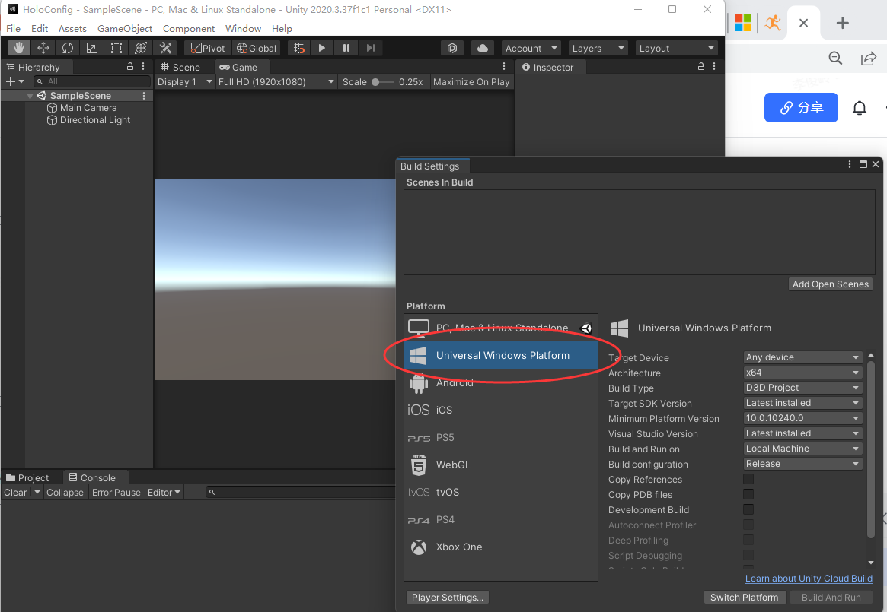2.3) 配置 MRTK
双击 MixedRealityFeatureTool.exe 打开 MRTK 配置页。然后选择项目位置，并点击 Discover Features。
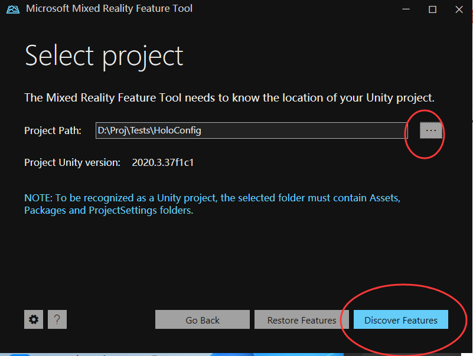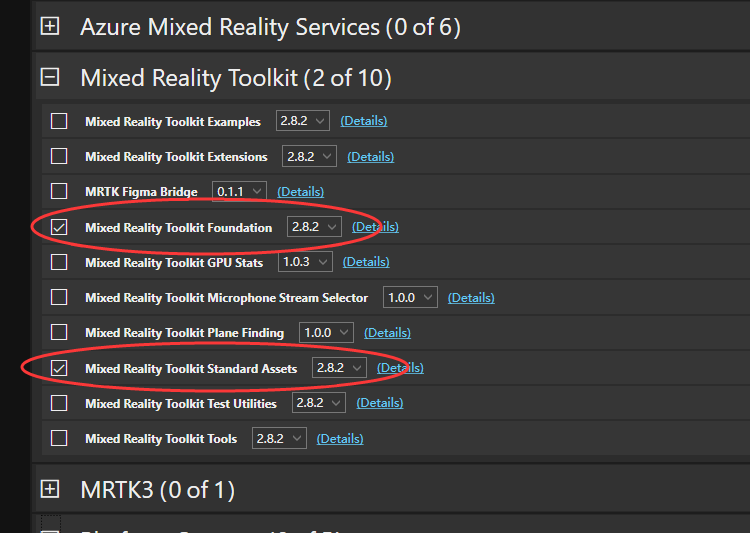
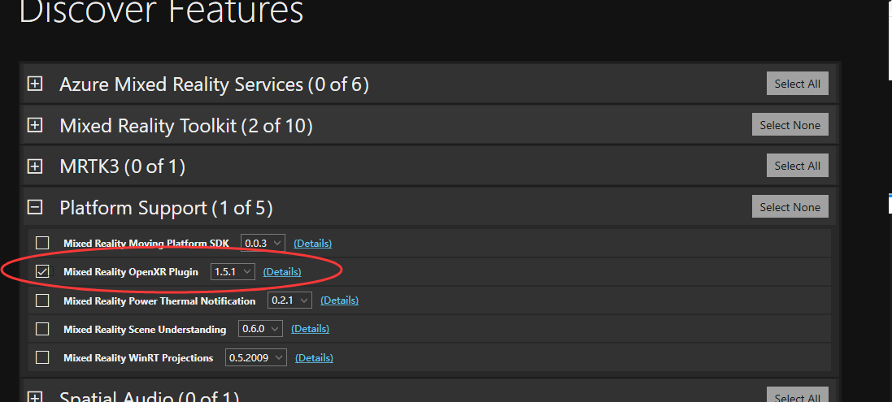
然后点击 GetFeatures，待 ImportFeatures 弹出后，点击 Import 以及下一步的 Approve，然后关闭微软的 Feature Tool 进入刚才创建的 Unity 工程中。
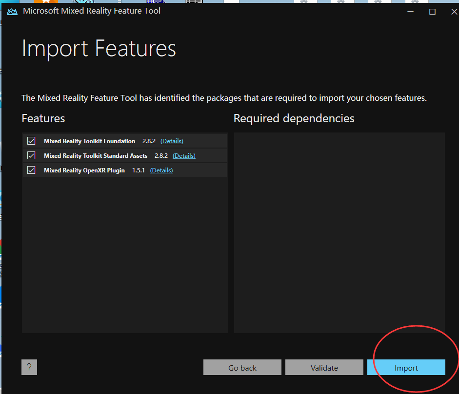之后进入 Unity 后，安装 Unity 中的提示完成指定的配置，这一步仅仅按照 Unity 的提示来即可。下一步是进入 PlayerSettings 界面，进行 XR Plug-in Management 的配置。
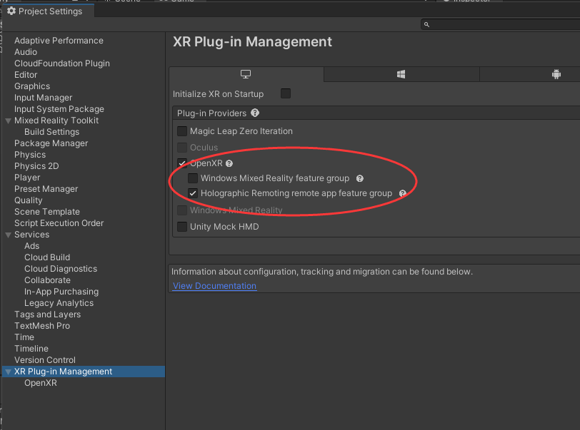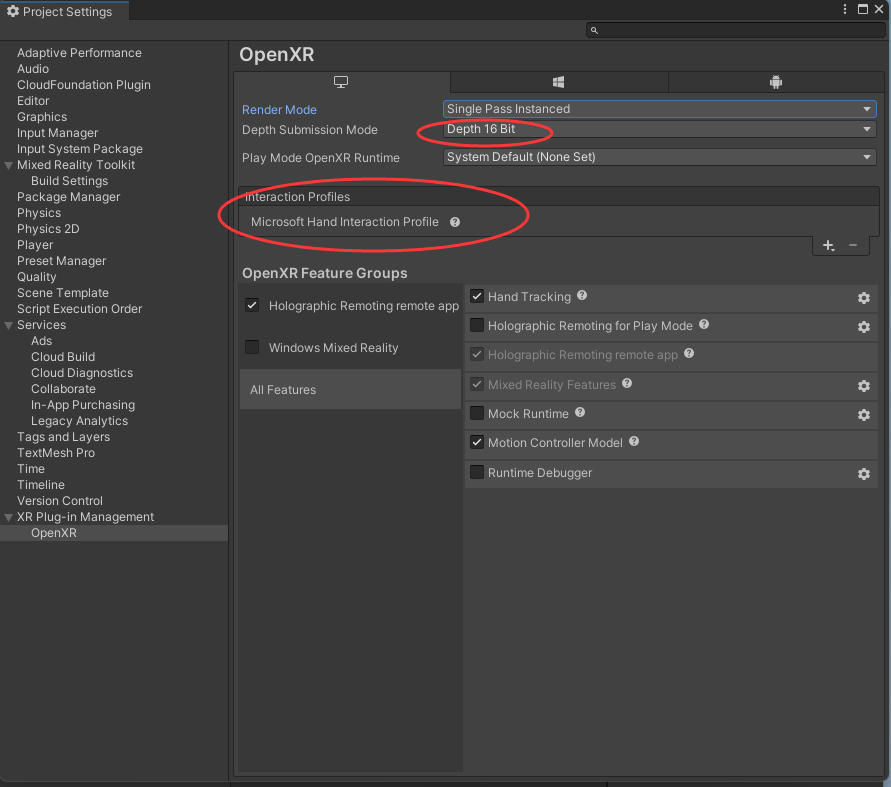
2.4) 配置 MRTK
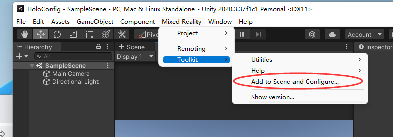点击这个菜单后，系统会自动给你配置好一个继承的使用默认设置的场景。
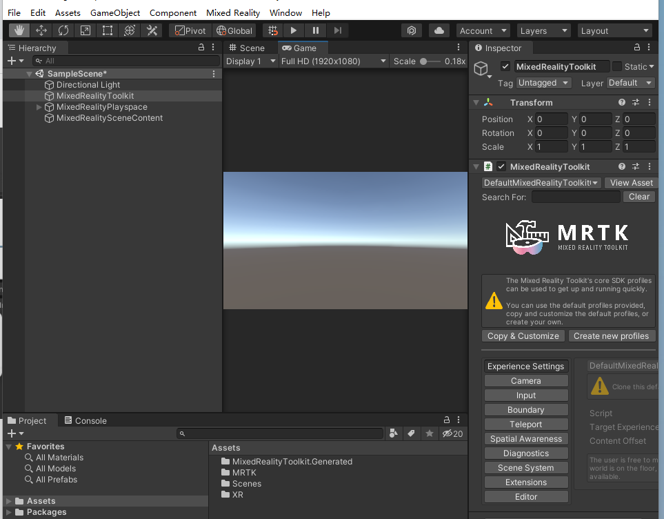2.5) 禁用 debug 信息
这个 debug 信息显示对视野遮挡的比较厉害，因此要禁用掉，除非需要调试。
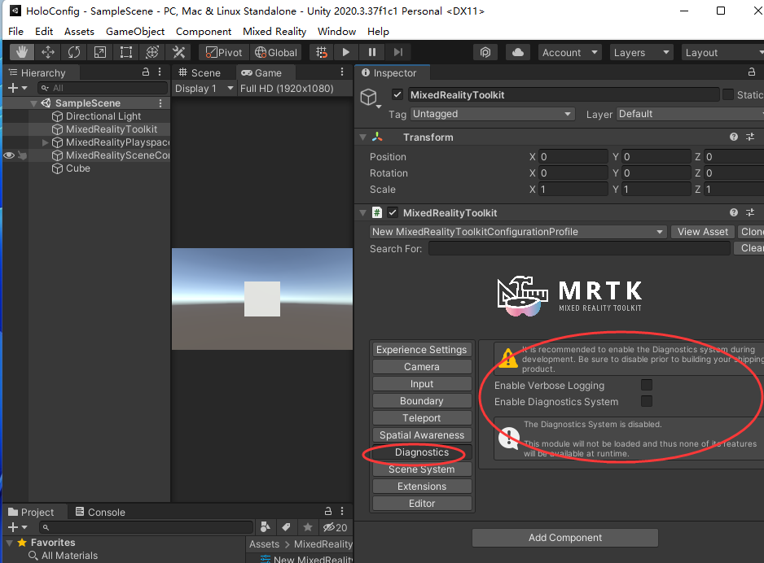三、基础交互
3.1) 导入外部三维模型
这是从网上下载的三维模型，已经打好了 unitypackage，我们把它导入进来。
1. 在 MixedRelitySceneContent 下新建一个 NeuroTags 节点
2. 把它们拖放到 NeuroTags 节点下面
3. 调整它们的大小约 20-30cm，并摆放到合适位置
4. 同时选中四个对象，点击 AddComponent 添加 Object Manipulator，并按照提示增加 NearInteractionGrabbable 组件
5. 添加 BoxCollider 并调整大小使刚好包围模型
3.2) 启动并连接 Remoting Player
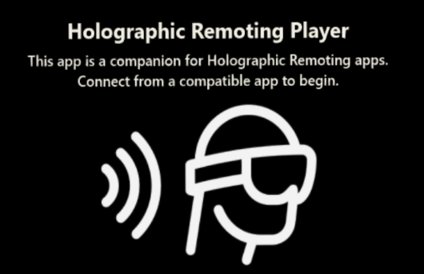在 HoloLens 的微软商店上，搜索 remoting，会出来一个人戴着头显的图标的那个，那个就是微软官方提供的 remoting player， 下载下来并启动，启动后，它会显示设备自己的 ip 地址。如果连接了 wifi，那么它就是 wifi 的 ip 地址。关掉 wifi 并插上 type-c 线和电脑连接， 那么它上面显示的 ip 地址就是一个虚拟的基于 usb 的 ip 地址。我们把这个 ip 地址输入 unity 工程中的指定位置。

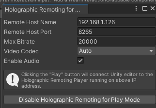
然后点击 unity 的 display，即可实时预览我们开发中的应用，并可以使用双手和刚刚建立的 Cube 进行交互。
此种方式适用于在Editor环境下快速验证，以及场景或者逻辑性能耗费过大，HoloLens自身性能支撑不了的情况。
3.3) SDK 接入
3.3.1) sdk 导入
下载下来的 sdk 导入到当前项目中。
3.3.2) NeuroManager 初始化
找到 NeuroManager.prefab，拖放到场景中，参数暂保持默认即可
3.3.3) GameController 游戏控制器
新建一个 GameController 游戏控制器，并添加如下代码。
using System.Collections;
using System.Collections.Generic;
using UnityEngine;
using BrainUp;
public class GameController : MonoBehaviour
{
// Start is called before the first frame update
void Start() {
NeuroManager.Instance.UseBlueTooth = false;
NeuroManager.Instance.StaticWindowSize = 3f;
NeuroManager.Instance.StaticWindowInterval = 1.5f;
NeuroManager.Instance.fixedWindow_thr = 0.02f;
NeuroManager.Instance.IsStaticWindow = true;
NeuroManager.Instance.minAlpha = 0;
NeuroManager.Instance.maxAlpha = 1;
}
// Update is called once per frame
void Update() {
if (Input.GetKeyDown(KeyCode.Space)) {
NeuroManager.Instance.SystemStart = true;
}
}
}
3.3.4) NeuroTag 配置（频闪对象）
目前的 NeuroTag 支持 MeshRender 和 UGUI 的 Image 和 RawImage。因为导入的模型是带动画的 SkinedMesh，因此暂时不能直接支持。我们会在对应的模型的头顶上放置一个频闪目标作为识别对象。当前放置的是一个球形目标。
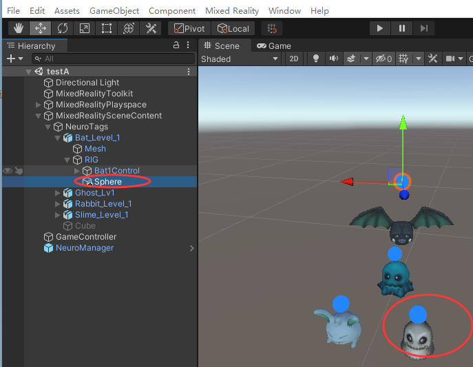这个球形目标使用的是从 NextMind 迁移来的着色器，在三维场景中，它可以保证不同距离上网格密度视觉上保持一致。但是为了方便测试，当前使用纯色的图案。下图是配置了闪烁对象。
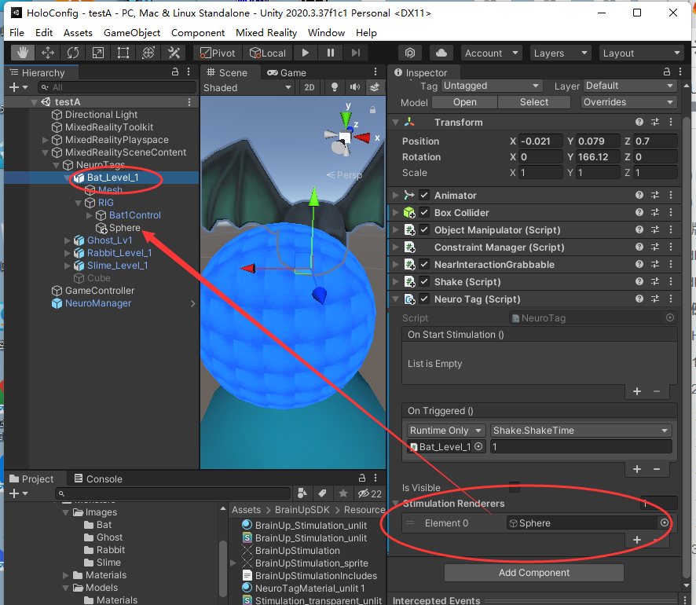当目标被识别到，触发结果的时候，我们让目标抖动一下，表示被识别到了。给它绑定 Shake.cs 组件。它的代码如下：
using System.Collections;
using System.Collections.Generic;
using UnityEngine;
public class Shake : MonoBehaviour {
float lastShakeTime = 0;
float duration = 0;
Vector3 defaultScale = Vector3.zero;
// Start is called before the first frame update
void Start() {
defaultScale = transform.localScale;
}
// Update is called once per frame
void Update() {
if (lastShakeTime <= 0) {
return;
}
float eTime = Time.time - lastShakeTime;
if (eTime < duration) {
float scale = Mathf.Sin(eTime * 20f);
scale *= 0.1f;
scale += 1f;
transform.localScale = defaultScale * scale;
} else {
lastShakeTime = 0;
transform.localScale = defaultScale;
}
}
public void ShakeTime(float pDuration) {
lastShakeTime = Time.time;
duration = pDuration;
}
}
触发事件这里绑定函数并填入参数。事件触发可以使用拖拽方式进行绑定， 或者是使用代码绑定。根据需要如果逻辑相对复杂，建议代码绑定，自由度更高。
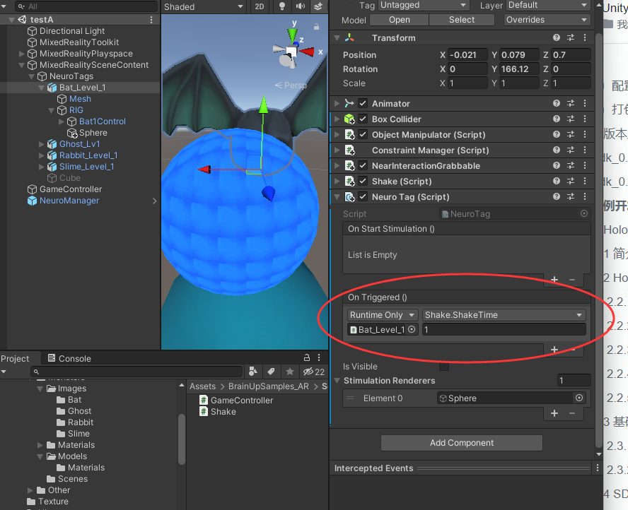3.3.5) 运行
点击 Play，待头显中显示三维画面，然后按 F 进行设备查找，按 C 进行设备连接，按空格开始系统主循环。 然后在头显中凝视某个目标，并拿光电管对准电脑显示器上对应的目标进行测试。如果闪烁结束， 光电管对准的目标触发了抖动说明识别成功。
四、打包部署
4.1) 打包生成 UWP 的 VisualStudio 工程
其中 BuildSettings 配置项如下所示
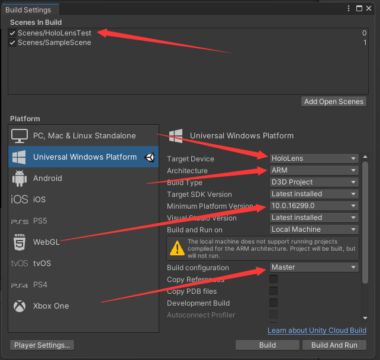除此之外还需要配置 UWP 的清单，在 Unity 中的 PlayerSettings > Publishing Settings > Capabilities 中，勾选如下复选框：
InternetClientInternetClientServer
PrivateNetworkClientServer
WebCam
Microphone
Bluetooth
SpatialPerception
GazeInput
Supported Device Families 中勾选如下复选框
DesktopHolographic
然后点击 Build，会生成一个 Visual Studio 的解决方案(.sln文件)，使用 Visual Studio 2019 打开这个解决方案。
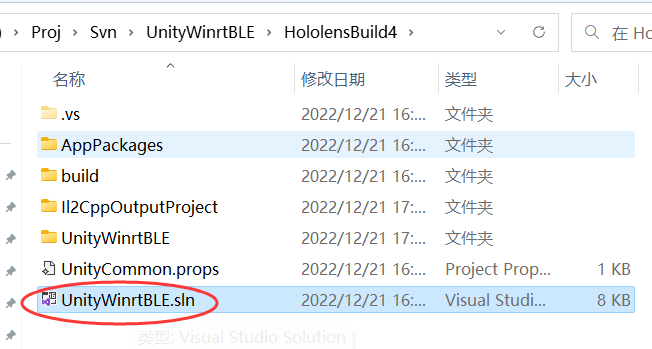4.2) 生成 UWP 安装文件
打开解决方案后，可以看到三个工程，选中 Universal Windows 工程，右键 > 发布 > 创建应用程序包
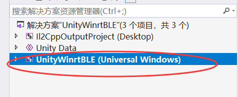分发方法如下图所示选择旁加载，然后点击下一步
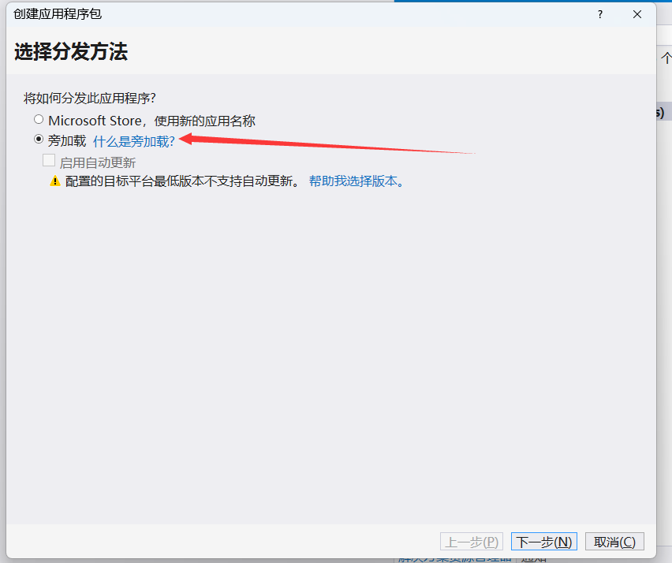签名我们我们使用默认的即可，确认后点击下一步：
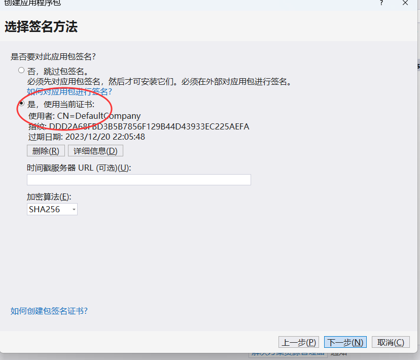选择输出位置，以及要打包的方案映射，方案映射中选择 Arm，注意一定要是 Release，不能为 Debug。确认后点击创建按钮进行输出。
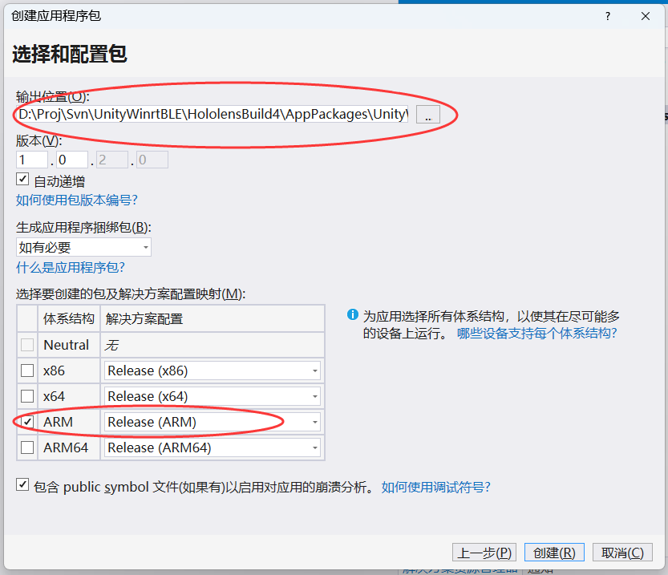成功输出后会弹出一个提示对话框，点击关闭即可。然后在输出目录可以看到输出的文件。
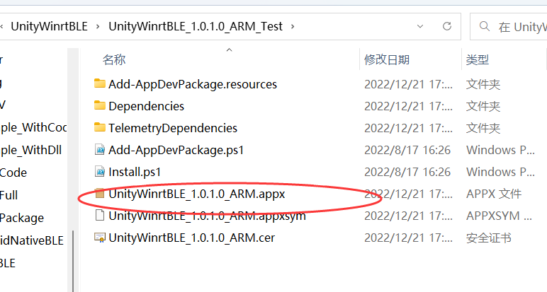4.3) 安装到 HoloLens
4.3.1) HoloLens 设备门户
HoloLens 的设备门户是一个网页，它可以管理 HoloLens 上的设置、应用等。 其入口即是 Hololens 的 IP 地址，在浏览器中输入当前 HoloLens 的 IP 地址即可。当前测试机的设备门户
IP：192.168.1.126
账号：lee
密码：1234567
进入后可以看到如下页面：
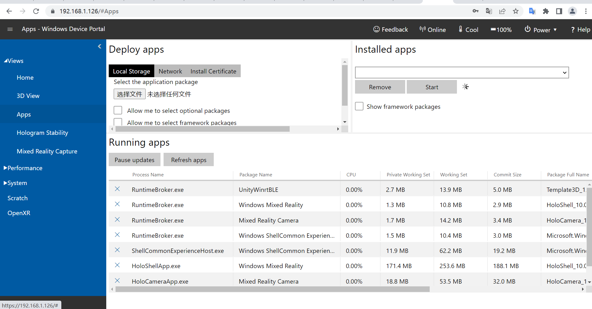如上图，当前所在页面是 Views/Apps。在这个页面中，左侧边栏提供 App 安装功能， 右侧边栏提供了卸载 App 功能。底部列表是当前在运行的应用。
4.3.2) 安装并体验
点击安装栏的选择文件，选择我们打包好的部署文件(.appx)，然后按照提示进行安装。
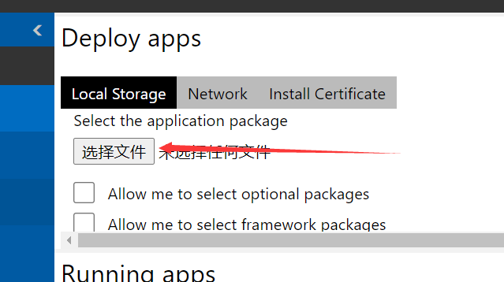安装好后，可以在设备门户中直接点击运行来运行这个应用。或者是在 HoloLens 的应用列表中找到这个应用的图标，然后打开即可体验。